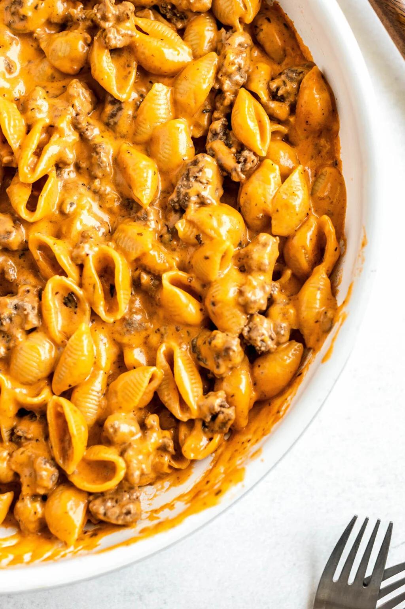

Hamburger Helper

Cheesy Homemade Hamburger Helper
This easy and extra cheesy homemade hamburger helper recipe is ready in just 30 minutes! Tender pasta and ground beef are coated in a creamy tomato and cheese sauce all cooked together in one-pot
Ingredients
- Ground Beef
- Minced Garlic
- Chopped Onions
- All Purpose Flour
- Beef Broth
- Tomato Sauce
- Italian seasoning
- Seasoned Salt
- Smoked Paprika
- garlic powder
- salt
- pepper
- Pasta Shells
- Heavy Cream
- Shredded Cheddar Cheese
- Brown the ground beef over medium heat
- Saute the onion about 5 minutes, add the garlic for the last 30 seconds.
- Add the flour and stir to cook for about 1 minute
- Stir in the beef broth and bring to a boil
- Add the tomato sauce, seasonings and pasta, stir to combine. Place the lid on top and simmer 15 minutes
- Add the cream and cheese
- Add the ground beef
- Stir until cheese is melted and ground beef is warm through
- Season to taste
Enjoy!